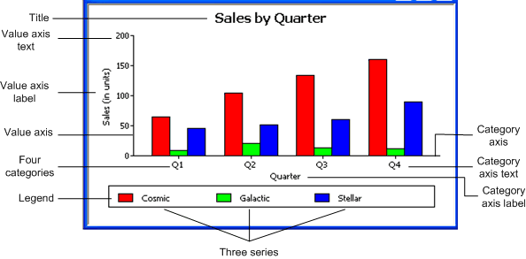
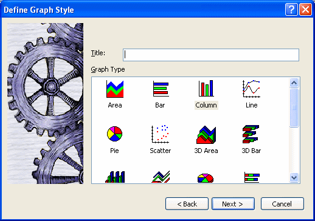
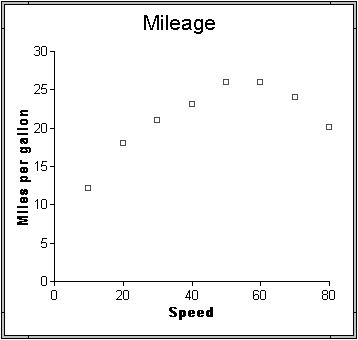
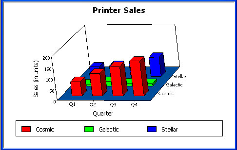
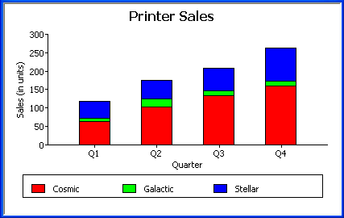

Often the best way to display information is graphically. Instead of showing users a series of rows and columns of data, you can present information as a graph in a DataWindow object or window. For example, in a sales application, you might want to present summary information in a column graph.
PowerBuilder provides many types of graphs and allows you to customize your graphs in many ways. Probably most of your use of graphs will be in a DataWindow object—the source of the data for your graphs will be the database.
You can also use graphs as standalone controls in windows (and user objects) and populate the graphs with data through scripts.
The way you define graphs is the same whether you are using them in a DataWindow object or directly in a window. However, the way you manipulate graphs in a DataWindow object is different from the way you manipulate them in a window.
Before using graphs in an application, you need to understand the parts of a graph and the kinds of graphs that PowerBuilder provides.
Here is a column graph created in PowerBuilder that contains most major parts of a graph. It shows quarterly sales of three products: Stellar, Cosmic, and Galactic printers:

Graphs display data points. To define graphs, you need to know how the data is represented. PowerBuilder organizes data into three components.
Table 26-2 lists the parts of a typical graph.
PowerBuilder provides many types of graphs for you to choose from. You choose the type on the Define Graph Style page in the DataWindow wizard or in the General page in the Properties view for the graph.

Area, bar, column, and line graphs are conceptually very similar. They differ only in how they physically represent the data values—whether they use areas, bars, columns, or lines to represent the values. All other properties are the same. Typically you use area and line graphs to display continuous data and use bar and column graphs to display noncontinuous data.
The only difference between a bar graph and a column graph is the orientation: in column graphs, values are plotted along the y axis and categories are plotted along the x axis. In bar graphs, values are plotted along the x axis and categories are plotted along the y axis.
Pie graphs typically show one series of data points with each data point shown as a percentage of a whole. The following pie graph shows the sales for Stellar printers for each quarter. You can easily see the relative values in each quarter. (PowerBuilder automatically calculates the percentages of each slice of the pie.)

You can have pie graphs with more than one series if you want; the series are shown in concentric circles. Multiseries pie graphs can be useful in comparing series of data.
Scatter graphs show xy data points. Typically you use scatter graphs to show the relationship between two sets of numeric values. Non-numeric values, such as string and DateTime datatypes, do not display correctly.
Scatter graphs do not use categories. Instead, numeric values are plotted along both axes—as opposed to other graphs, which have values along one axis and categories along the other axis.
For example, the following data shows the effect of speed on the mileage of a sedan:
| Speed | Mileage |
|---|---|
| 10 | 12 |
| 20 | 18 |
| 30 | 21 |
| 40 | 23 |
| 50 | 26 |
| 60 | 26 |
| 70 | 24 |
| 80 | 20 |
Here is the data in a scatter graph:

You can have multiple series of data in a scatter graph. You might want to plot mileage versus speed for several makes of cars in the same graph.
You can also create 3-dimensional (3D) graphs of area, bar, column, line, and pie graphs. In 3D graphs (except for 3D pie graphs), series are plotted along a third axis (the Series axis) instead of along the Category axis. You can specify the perspective to use to show the third dimension:

In bar and column graphs, you can choose to stack the bars and columns. In stacked graphs, each category is represented as one bar or column instead of as separate bars or columns for each series:

You can use graphs in DataWindow objects and in windows. You specify the properties of a graph, such as its type and title, the same way in a DataWindow object as in a window.
 Using graphs in user objects You can also use graphs in user objects. Everything in this
chapter about using graphs in windows also applies to using graphs
in user objects.
Using graphs in user objects You can also use graphs in user objects. Everything in this
chapter about using graphs in windows also applies to using graphs
in user objects.
The major differences between using a graph in a DataWindow object and using a graph in a window (or user object) are: